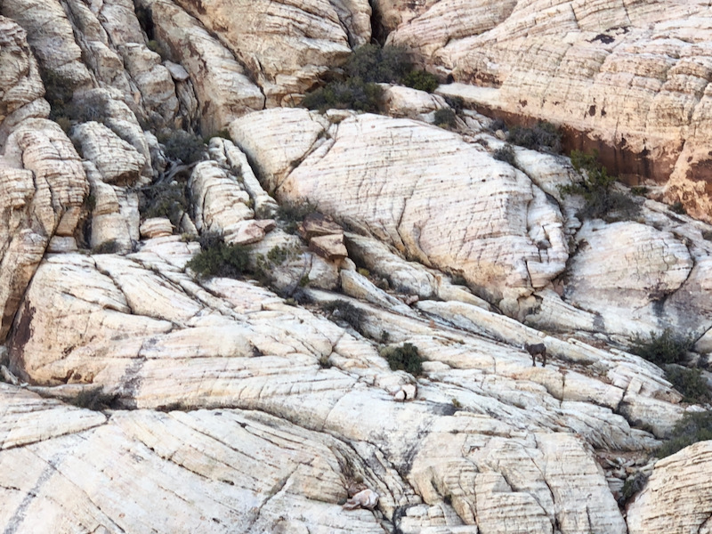

Mescalito after walking roughly 10 minutes from the Pine Creek Canyon parking
lot. The approach trail map can be found on
Mountain
Project.
Mescalito after walking roughly 10 minutes from the Pine Creek Canyon parking
lot. The approach trail map can be found on
Mountain
Project.
TL;DR: Stop reading this page if you (or anyone related to you) intend on suing me if you die, get hurt, and/or horribly lost on a 20 hr day epic.
Longer disclaimer: Climbing is dangerous. Do your own independent research before attempting any route. Notes here are for my own use and not intended to be definitive or "safe" beta of any sort.
Some additional things about this page:
Commentary: Cat in the hat is a chill, but interesting enough multipitch. Great route to familiarize yourself with Red Rock trad multis.
Commentary: If you're a somewhat competent climber (e.g. solid Joshua Tree 5.7 climber), you won't use half of this gear per pitch, but never hurts to have extras?
Being drawn...
Mescalito after walking roughly 10 minutes from the Pine Creek Canyon parking
lot. The approach trail map can be found on
Mountain
Project.
 Mescalito in all of it's glory.
Mescalito in all of it's glory.
 Unknown climber (me) on pitch 1.
Unknown climber (me) on pitch 1.
View from near pitch 4.
You do Frogland for the chockstone squeeze pitch. Just do it. You know you want to. Make some grunting noises, release your anger.
Being drawn...
 Watching the sun rise behind us on the approach
Watching the sun rise behind us on the approach
My leader starting pitch one. Pro? We don't need pro where we're going.
 Follower about to enter the chockstone birthing canal.
Follower about to enter the chockstone birthing canal.
 Found a friend on the walk-off.